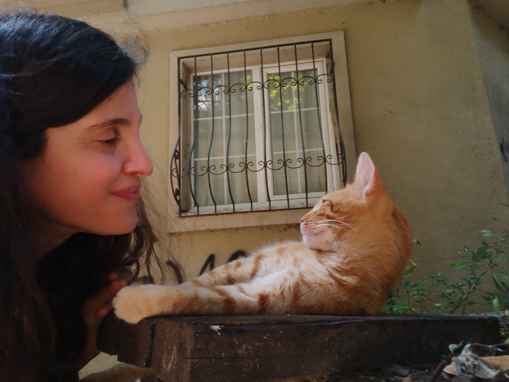
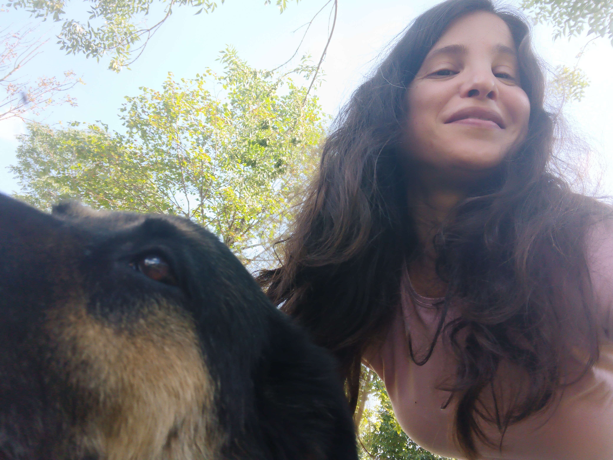
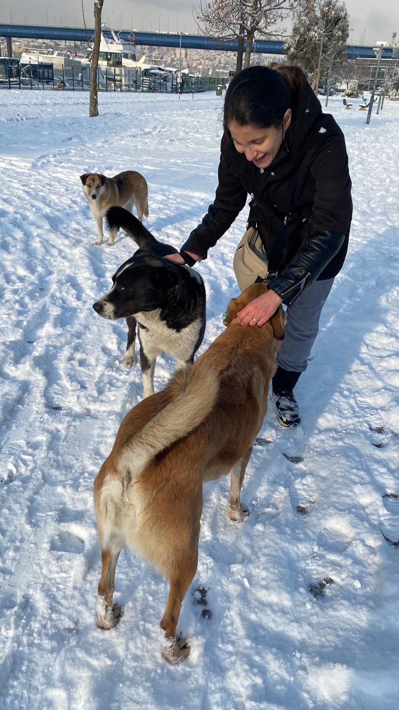
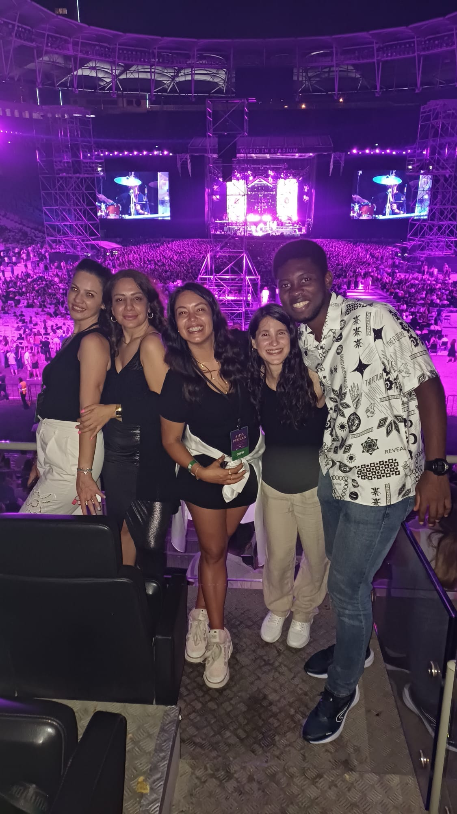
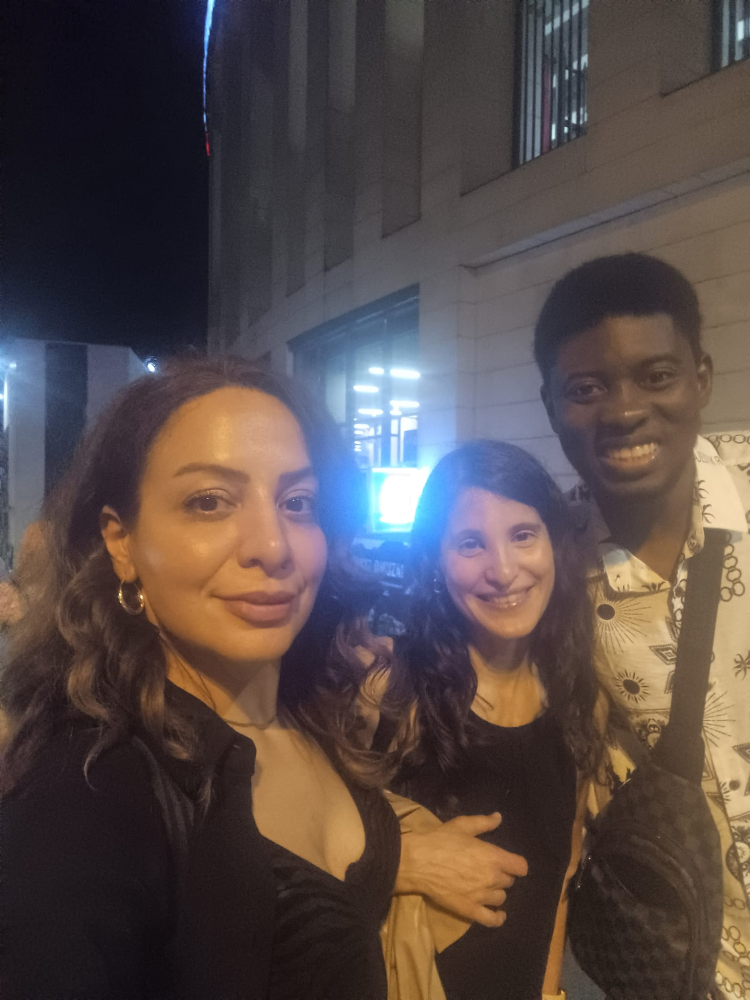

My time in Turkey has come to an end. Although I have never been
one to say "never," this time I know my stay here is over for
good. This chapter of my life has been filled with challenges,
with more lows than highs, but I cannot be more grateful for all
the lessons learned along the way.

The journey has not been easy, but every experience has taught me
something valuable. From facing the difficulties of adapting to a
new culture to finding beauty in the small details of everyday
life, every moment has been an opportunity for personal growth.

The fear of what is to come is something I cannot deny. Every
change brings with it a mixture of uncertainty and hope, and
although I feel scared, I am also open to the new opportunities
that the future holds. This goodbye is full of mixed emotions, but
I leave with a heart full of gratitude and with the certainty that
Turkey will always hold an important place in my life. My time
here has come to an end, but the lessons and memories will live on
forever.
The hardest part of saying goodbye, without a doubt, will be the
stray cats that became my pack. Although I was unable to keep any
as pets, my love and commitment to them only grew with time. These
felines, with their insatiable curiosity and unique personalities,
filled my days with tenderness and companionship.
I must confess that I will deeply miss Turkish tea, baklava and
Turkish coffee, even when I am not a coffee lover. These simple
pleasures became part of my day to day life, bringing me comfort
on difficult days and accompanying me in moments of joy.
I feel that I barely learned to care for them and understand their
world, and I find it hard to accept that they will no longer be in
my day to day life. The company of these animals was fundamental
in the moments when I felt lonely. Their presence gave me comfort
and support in ways that words cannot describe. Saying goodbye to
them is, without a doubt, the most painful part of leaving Turkey.

I will deeply miss my colleagues and bosses specially Nur and Özge
who accompanied me during the last part of my time here. Their
support, camaraderie and guidance were invaluable,transforming the
job into a truly enriching experience.
I can't forget Dovi, who although not a cat, was my faithful doggy
companion on many of my visits to the park. His cheerful and loyal
presence was a balm in moments of loneliness.

I will miss Clinton, who always made things easier at work during
this last stage in Turkey. Despite his youth, his conversations
full of hope and positivity gave me strength at times when I
needed it most. His friendship was an unexpected gift that I will
treasure forever.